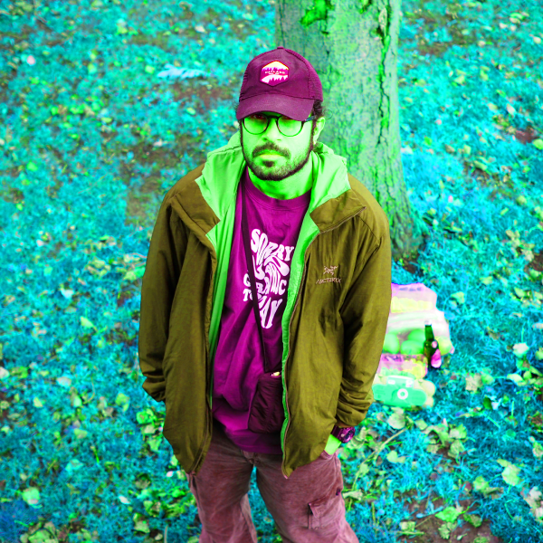

I'm a software engineer and I've worked in this field for more than 10 years. I was always keeping an eye on art, and that's what I'm trying to show you here, it's more of a gallery, and less of a portfolio. My effort to mix art and technology — fusion electronic music, photography, and videography — but let's keep it easy and call it "Art".
“They wander in darkness seeking light, failing to realize that the light is in the heart of the darkness”— Manly P. Hall
